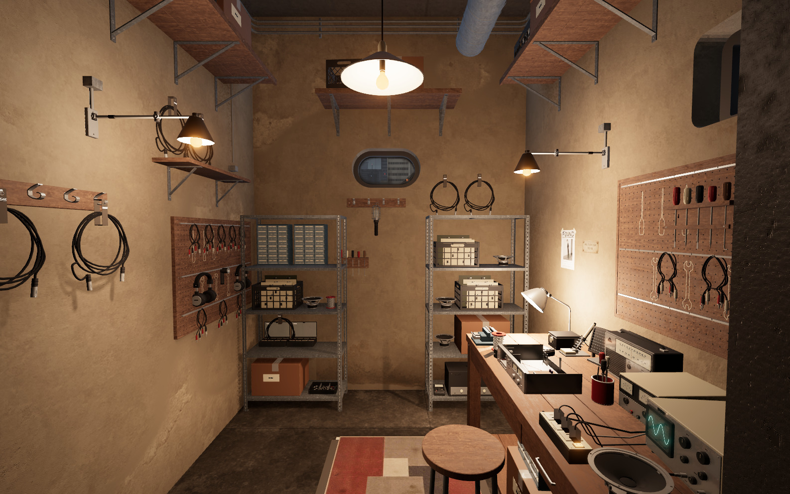
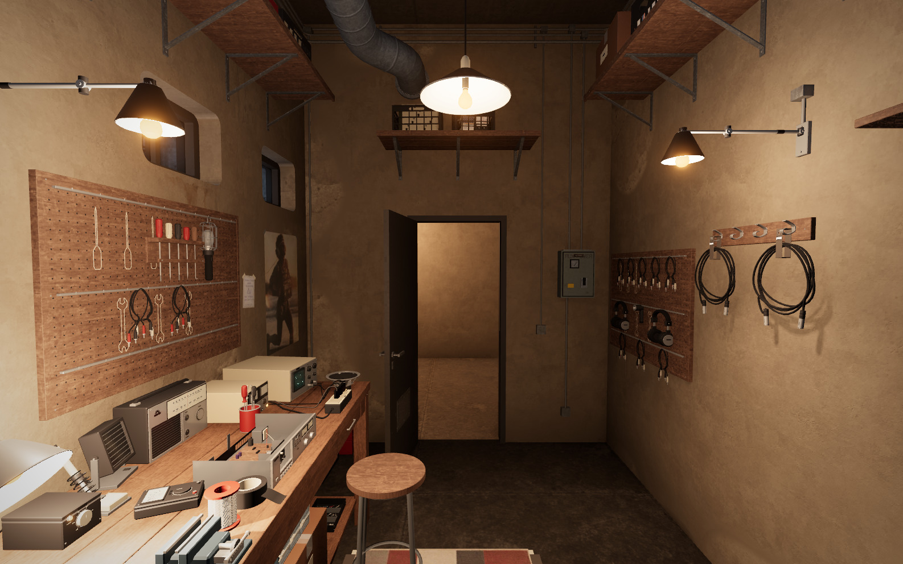
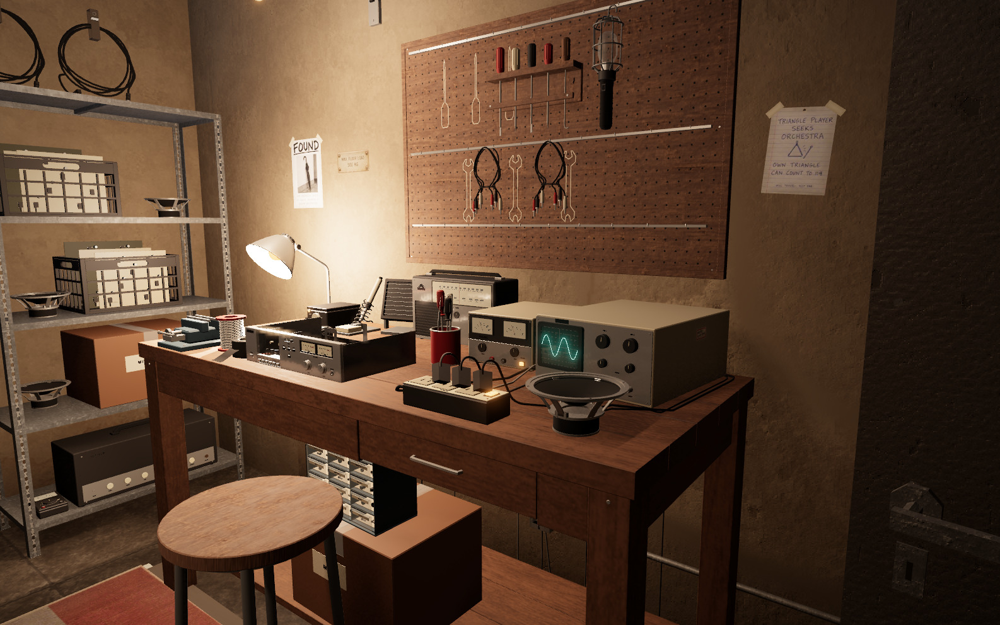
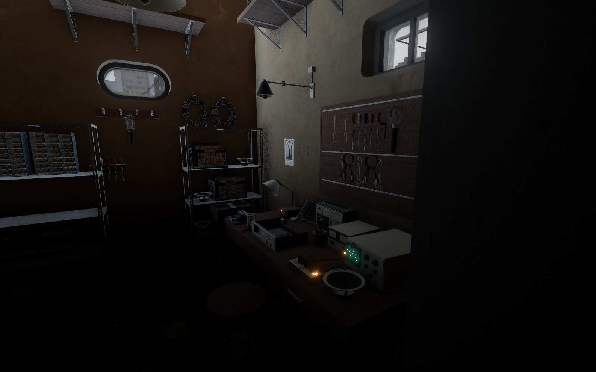
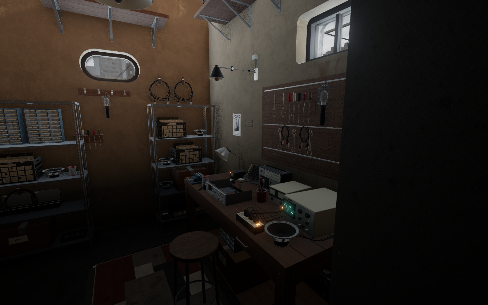
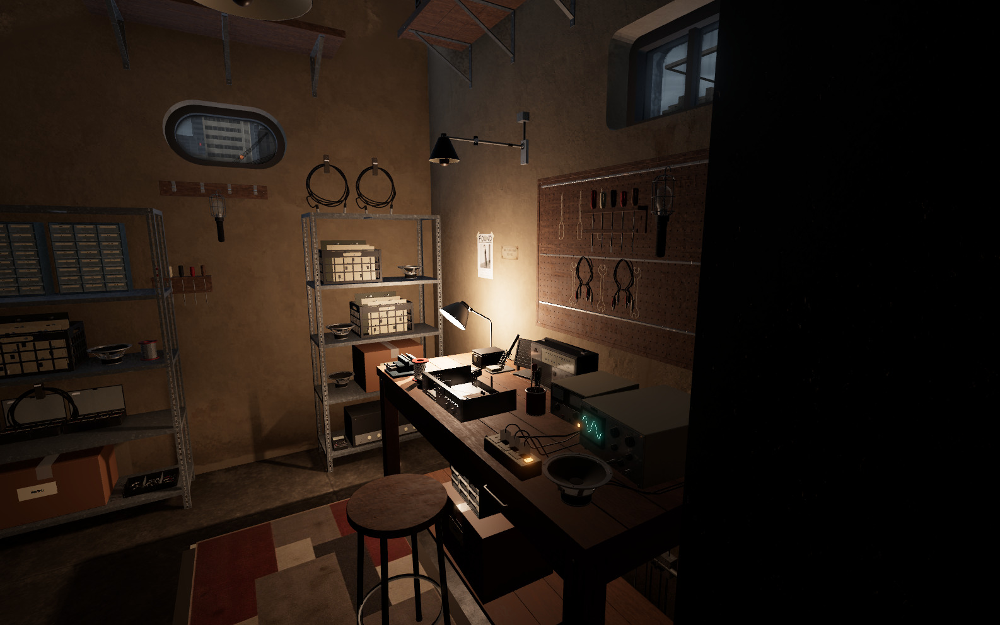
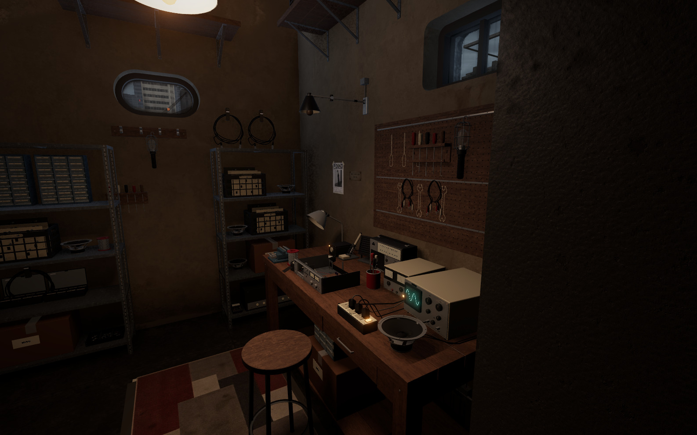
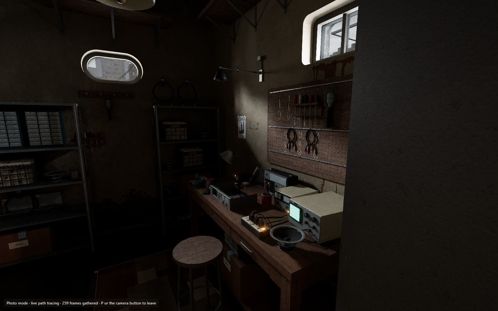
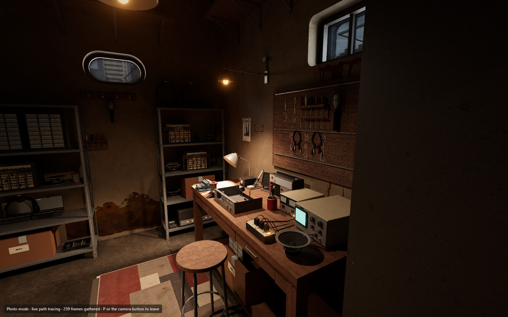

Workshop · concepts and progress
The third room pass is live: outside light reaches the workshop with every lamp off, ordinary rendering now casts shadows from the workshop lamps, the bench uses custom API-generated timber grain and wear, and the wall coils hang in uneven loops. Existing repair stock fills the emptier shelves and follows its supports when the layout changes. The pictures below are actual captures of the deployed apartment on an RTX 5090. Tap any picture for full resolution.
Live · entrance toward the workbench

Live · workbench toward the entrance

Live · repair bench detail

Lighting · matched comparisons
The noon pair uses the same camera and lamp state. Evening examples isolate the bench lamp and pendant so their shadows can be judged. Ordinary high and medium settings have lamp shadows; low keeps its existing lighter rendering budget.
Before · noon, lamps off


Live · noon, lamps off


Live · bench lamp only


Live · ceiling pendant only


Live · noon, lamps off · P mode


Live · evening lamps · P mode


Remaining concept gaps: the bench and storage proportions are still constrained by the existing room, shelf groupings remain more regular than the concepts, and ordinary window lighting lacks the full shadow detail of P mode. Mobile hardware performance is not verified in these captures.
Approved concept · entrance toward the workbench

Approved concept · workbench toward the entrance